ECOVENT Operations
Enquiry to Dispatch — Admin Web Portal User Guide
ECOVENT AIR SYSTEMS INDIA LLP
Quality Ducts Is Our Business
Version 2.0 Demo | 19 September 2026
Enquiry → Design → Order → Manufacture → Dispatch
Table of Contents
- Overview
- End-to-End Workflow
- Navigation & Display Views
- Creating a New Enquiry
- Design Review & Revision Phases
- Production Tracking & Activity Log
- Order & Dispatch
- Screen Guide (with screenshots)
- Sample Enquiry Activity Log
- Status Reference
1. Overview
ECOVENT Operations is a browser-based portal for managing the full duct manufacturing lifecycle — from customer enquiry through design review, order confirmation, production, and multi-trip dispatch.
Key principle: Enquiry ≠ Order ≠ Dispatch
A customer enquiry captures intent and drawings. An order is created only after design approval. Each vehicle trip is a separate dispatch. One order can have many dispatch trips until fully delivered.
| Role | Primary Use |
|---|
| Sales | Create enquiries, upload drawings, track customer projects |
| Design Engineer | Extract duct schedule, manage revision phases, approve design |
| Production Manager | Approve production start, log progress, mark ready for dispatch |
| Dispatch Coordinator | Create dispatch trips, vehicle details, share dispatch notes |
To access the portal, open the login screen and click Enter Demo. Use the Acting as selector in the header to record who performs each action.
2. End-to-End Workflow
1New Enquiry — capture customer, project, and drawing details. No order is created at this stage.
2Design Review — engineer extracts duct tags, quantity, and area. Multiple revision phases supported (Rev 01, Rev 02…).
3Approve Design — design must be saved and approved before order conversion.
4Convert to Order — creates a production order linked to the enquiry.
5Production — production manager approves start, logs progress updates, marks ready for dispatch.
6Dispatch Trips — create one or more vehicle dispatches until balance reaches zero.
Every step is recorded in the Delivery & Activity History with the person name, role, timestamp, and phase.
3. Navigation & Display Views
| Menu | Purpose |
|---|
| Dashboard | KPIs, featured enquiry workflow, recent enquiries and dispatches |
| Enquiries | All customer enquiries with stage filters and view modes |
| Orders | Manufacturing orders ready for or in dispatch |
| Dispatch | All vehicle trips across orders |
| Settings | Demo reset and application information |
Toolbar Actions (per screen)
| Screen | Actions |
|---|
| Dashboard | All Enquiries · New Enquiry · Create Dispatch (when ready) |
| Enquiries | New Enquiry |
| Orders | Create Dispatch (first dispatchable order) |
| Dispatch | New Dispatch Trip |
Display Views
On Enquiries, Orders, and Dispatch lists, switch between Cards, Grid, and Kanban. Your preference is saved in the browser.
Acting as
The header dropdown lets you select the current user: Karthik S (Sales), Priya N (Design Engineer), Ravi M (Production Manager), or Suresh K (Dispatch Coordinator). All logged actions use this identity.
4. Creating a New Enquiry
Click New Enquiry from the Dashboard or Enquiries screen. This opens the enquiry form at /enquiries/new — not an existing record.
Customer Details
| Field | Required | Description |
|---|
| Customer Name | Yes | Company or client name |
| Contact Person | Yes | Primary site contact |
| Phone | Yes | Contact number |
| Email | No | Contact email |
Project Details
| Field | Required | Description |
|---|
| Project Name / WO No | Yes | e.g. AIRMASTER-WO-900 — becomes order reference |
| Project Location | Yes | Site or city |
| Enquiry Date | Yes | Date enquiry received |
| Expected Completion | No | Target delivery date |
Assignment
| Field | Required | Description |
|---|
| Sales Person | Yes | Assigned sales representative |
| Priority | Yes | Low / Normal / High / Urgent |
| Source | No | Existing Customer, Referral, Website, etc. |
| Remarks | No | Scope notes, urgency, site constraints |
Drawing Attachment
Upload customer drawing (PDF, DWG, DXF, Excel, or image). In demo mode the filename is stored. On submit, the system:
- Generates a unique enquiry number (e.g. ENQ-2026-0006)
- Logs Enquiry created and Drawing uploaded in activity history
- Navigates to the enquiry detail page for design review
Important: No manufacturing order is created when the enquiry is submitted. The order is created only after design approval and explicit conversion.
5. Design Review & Revision Phases
On the enquiry detail page, the workflow stepper shows progress through Enquiry → Design Review → Order → Manufacturing → Dispatch.
Design workflow
- Start Design Review — begins Rev 01 extraction phase
- Save Duct Extraction — enter duct tags, total quantity, total area (m²), and notes
- Approve Design — locks extraction; logs approver name and date
- Request Revision (optional) — sales or engineer requests changes with a reason; status becomes Revision Needed
- Start Next Revision Phase — increments to Rev 02, Rev 03, etc.
- Convert to Order — available only when design is approved
Each design action is logged with the revision number (e.g. Design updated — Rev 02) and the acting user's name.
6. Production Tracking & Activity Log
Production steps (on enquiry or order detail)
- Approve Production Start — production manager authorises shop floor to begin (logged with name and date)
- Log Production Update — record produced quantity (e.g. 12 / 18 qty)
- Mark Ready for Dispatch — all items moved to ready stock
Activity history
The Delivery & Activity History section groups all events by phase:
| Phase | Example events |
|---|
| Enquiry | Enquiry created |
| Design | Design review started, design updated, revision requested, design approved |
| Order | Converted to order |
| Production | Production start approved, progress updated, marked ready for dispatch |
| Dispatch | Dispatch Trip 1 created, Dispatch Trip 2 created, delivery completed |
Each entry shows: action title, detail, actor name, role, timestamp, and revision/trip number where applicable.
The Workflow Progress summary strip shows the latest update per phase at a glance.
7. Order & Dispatch
Quantity tracking
| Metric | Meaning |
|---|
| Ordered | Total on confirmed order |
| Produced | Fabricated quantity |
| Ready Stock | Available for dispatch |
| Dispatched | Already sent on previous trips |
| Balance | Remaining to dispatch |
Dispatch workflow
- Select order from Dashboard, Orders, or Enquiry detail
- Select items — use + / − per tag or Select All Available
- Enter vehicle details — vehicle number, driver, transporter, date/time
- Preview — verify quantities, area, and remaining balance
- Confirm — dispatch number assigned, balances updated, activity logged as Dispatch Trip N
- Share — WhatsApp, email, or PDF dispatch note
Rules: Cannot dispatch more than available per tag. Order becomes Fully Dispatched when balance reaches zero.
8. Screen Guide
Screenshots captured from the live demo application.
Login — click Enter Demo to access ECOVENT Operations
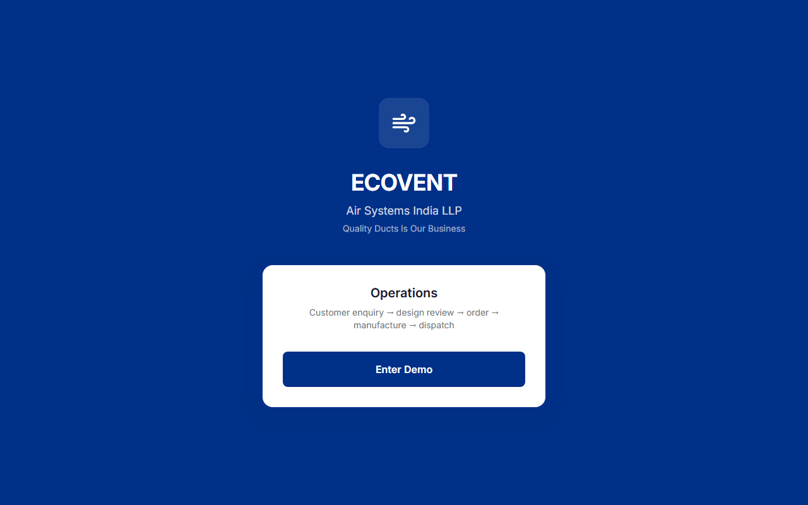
Dashboard — KPIs, workflow progress, and quick actions (New Enquiry, Create Dispatch)
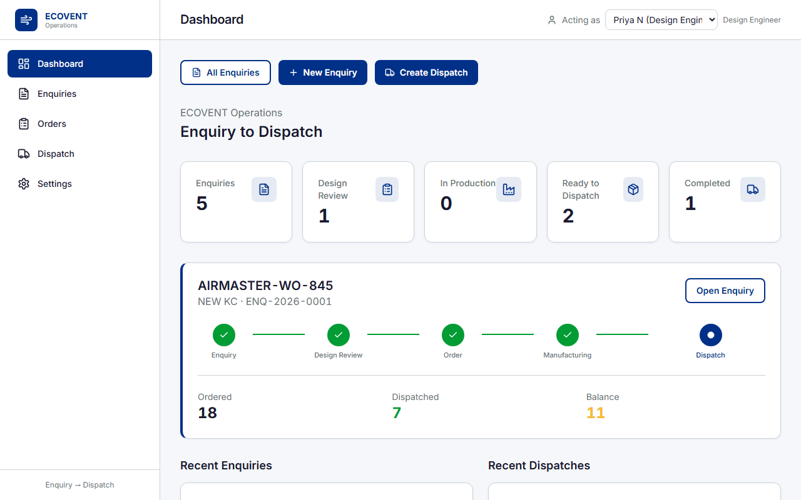
Enquiries list — Card / Grid / Kanban views with stage filters
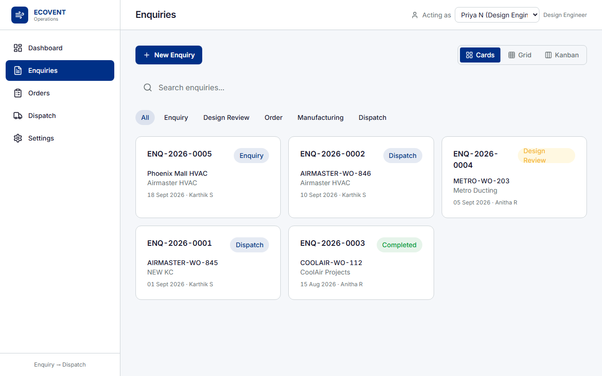
New Enquiry form — customer, project, assignment, and drawing upload
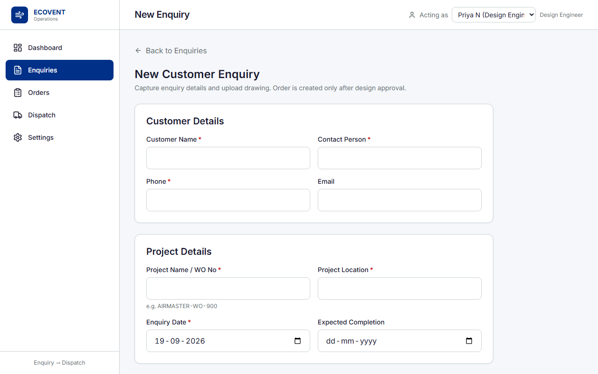
Enquiry detail — workflow stepper, design review, production, and activity history

Delivery & Activity History — phased audit trail with actor and revision numbers
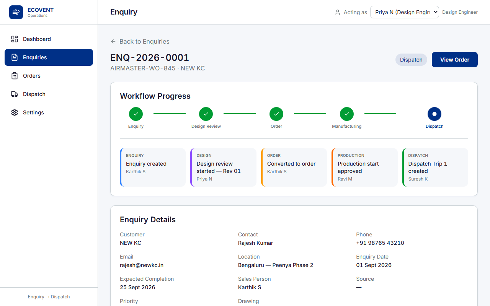
Orders list — status badges (Ready = blue, Fully Dispatched = green)
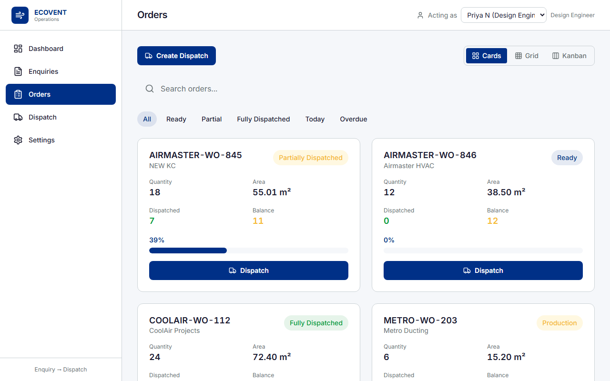
Order detail — manufacturing progress, production approval, and dispatch trips
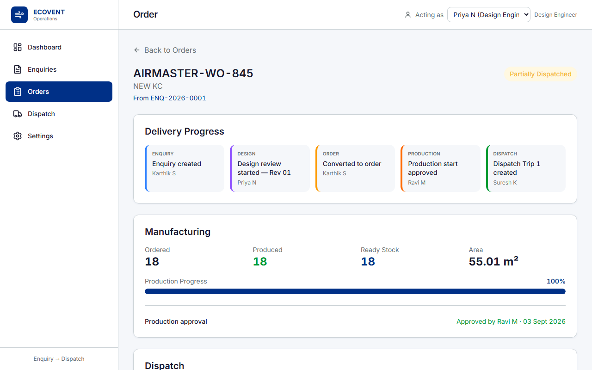
Create dispatch — select items with + / − quantity controls per tag
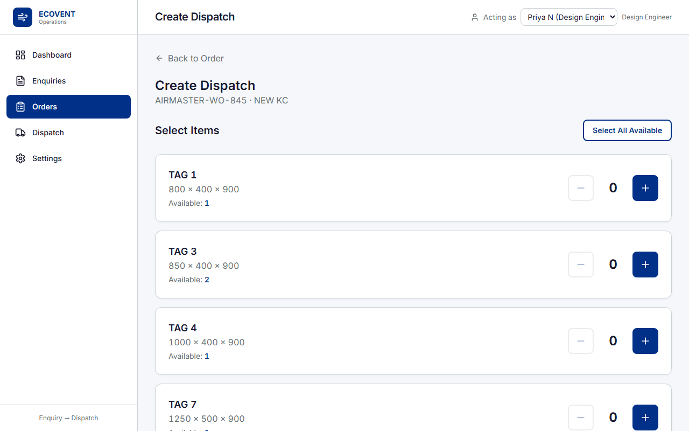
Vehicle details — driver, transporter, and loading information
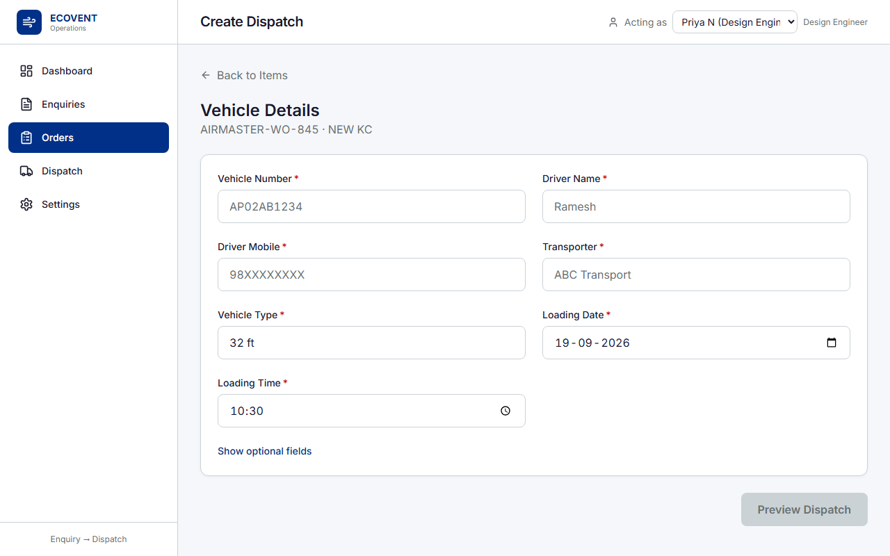
Dispatch preview — review quantities before confirming trip
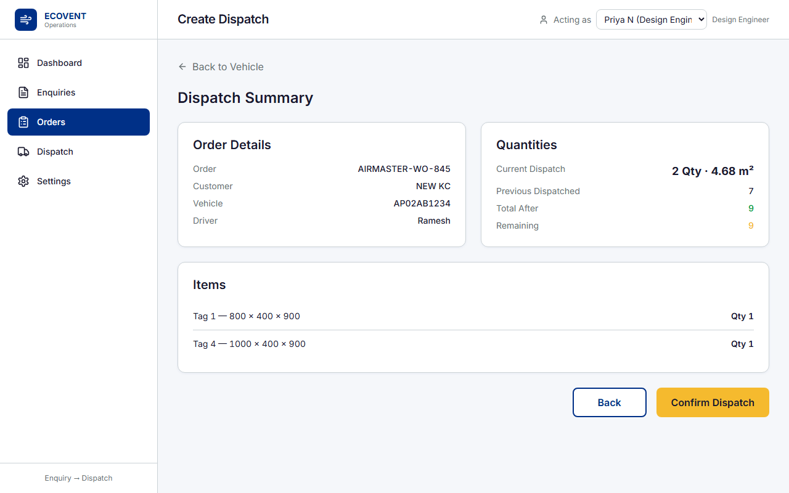
Dispatch history — all vehicle trips across orders
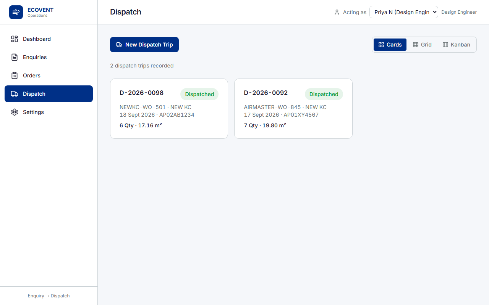
Dispatch note — printable document with item table and signatures
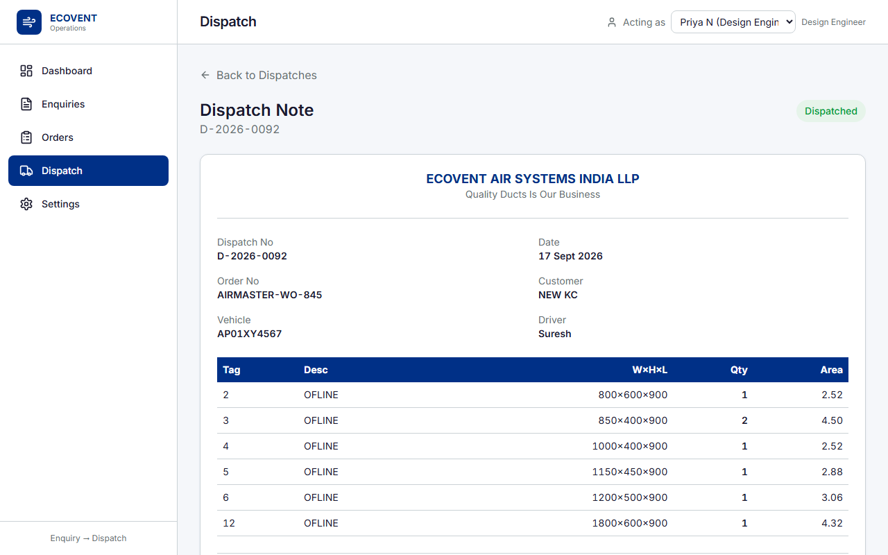
Settings — demo reset and application information
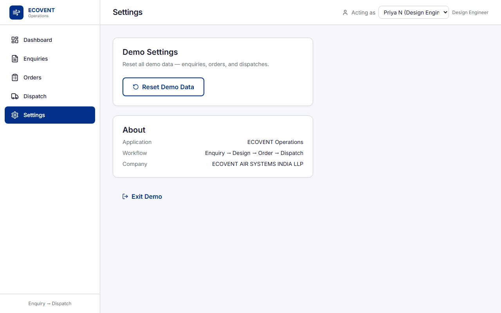
9. Sample Enquiry Activity Log
Full audit trail for demo enquiry ENQ-2026-0001 (AIRMASTER-WO-845 / NEW KC) showing design revisions, production approval, and dispatch trip:
| Phase | Action | Detail | Actor | Rev/Trip |
|---|
| Enquiry | Enquiry created | ENQ-2026-0001 — AIRMASTER-WO-845 | Karthik S (Sales) | — |
| Design | Design review started | Rev 01 | Priya N (Design Engineer) | 1 |
| Design | Revision requested | Client changed AHU room layout | Karthik S (Sales) | 1 |
| Design | Design revision started | Rev 02 | Priya N (Design Engineer) | 2 |
| Design | Design approved | Ready for order conversion | Priya N (Design Engineer) | 2 |
| Order | Converted to order | AIRMASTER-WO-845 | Karthik S (Sales) | — |
| Production | Production start approved | Shop floor authorised | Ravi M (Production Manager) | — |
| Production | Production progress updated | 12 / 18 qty produced | Ravi M (Production Manager) | — |
| Production | Marked ready for dispatch | 18 qty ready in stock | Ravi M (Production Manager) | — |
| Dispatch | Dispatch Trip 1 created | D-2026-0100 · 7 qty · KA-01-AB-1234 | Suresh K (Dispatch Coordinator) | 1 |
10. Status Reference
Order Status Badges
| Status | Colour | Meaning |
|---|
| Production | Orange | Manufacturing in progress |
| Ready | Blue | Stock ready — awaiting first dispatch |
| Partially Dispatched | Orange | Some qty sent, balance remains |
| Fully Dispatched | Green | All qty dispatched — complete |
Enquiry Stages
| Stage | Meaning |
|---|
| Enquiry | New — awaiting design review |
| Design Review | Engineering extraction in progress or revision |
| Order | Converted — production not yet started |
| Manufacturing | Production in progress |
| Dispatch | Ready or partially dispatched |
| Completed | Fully dispatched |
Demo Order: AIRMASTER-WO-845
| Field | Value |
|---|
| Enquiry | ENQ-2026-0001 |
| Customer | NEW KC |
| Design Revision | Rev 02 (approved by Priya N) |
| Total Qty | 18 ducts · 12 tags |
| Total Area | 55.01 m² |
| Dispatched | 7 qty (Dispatch Trip 1) |
| Balance | 11 qty |